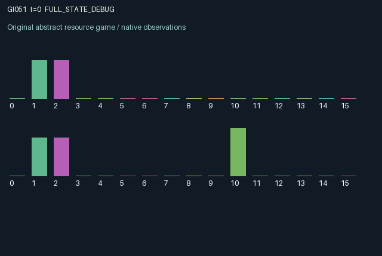

GI051 / LEGACY_ARRAY
astra-d2-00051 — In-flight routing under a shared switch and delayed clamps
2 agents5 actions16 observation columns32 original horizonRuntime: PASS
Release verification episode
Untrained uniform legal actions. Actual JAX state sampled along the full original episode; full-state debug camera. No human performance or learning claim.

Run this game
crucibles play --game 51
Start Python locally, then open the address printed by the terminal. Installation, multiplayer, takeover and keyboard controls →
Objective, rewards & ending
Exact task contract
{
"objective": "Accumulate original per-agent rewards under the interaction rules in mechanism.md.",
"natural_termination": "No early terminal; original t >= 32 horizon.",
"exact_transition_and_reward_source": "def raw_step(self, key, state, actions):\n roles = jnp.arange(2, dtype=jnp.int32)\n fresh_target = jax.random.randint(key, (2,), 0, 2, dtype=jnp.int32)\n toggling = (\n (actions == 3) & (state[\"energy\"] >= 0.08) & (state[\"lock\"] == 0)\n )\n parity = jnp.mod(jnp.sum(toggling.astype(jnp.int32)), 2)\n switch = jnp.mod(state[\"switch\"] + parity, 2).astype(jnp.int32)\n clamping = (actions == 4) & (state[\"energy\"] >= 0.25)\n lock = jnp.where(\n jnp.any(clamping), 2, jnp.maximum(state[\"lock\"] - 1, 0)\n ).astype(jnp.int32)\n active = state[\"packet\"] >= 0\n due = active & (state[\"age\"] >= 2)\n destination = jnp.mod(state[\"packet\"] + switch, 2)\n collision = jnp.all(due) & (destination[0] == destination[1])\n served = due & ((~collision) | (roles == state[\"priority\"]))\n blocked = due & (~served)\n correct = served & (destination == state[\"target\"])\n wrong = served & (~correct)\n launching = (\n ((actions == 1) | (actions == 2))\n & (~active) & (state[\"energy\"] >= 0.15)\n )\n new_packet = jnp.where(launching, actions - 1, -1).astype(jnp.int32)\n remaining = active & (~served)\n packet = jnp.where(remaining, state[\"packet\"], new_packet).astype(jnp.int32)\n age = jnp.where(\n remaining, jnp.minimum(2, state[\"age\"] + 1), jnp.where(launching, 1, 0)\n ).astype(jnp.int32)\n energy = jnp.clip(\n state[\"energy\"] + 0.04\n + 0.06 * (actions == 0).astype(jnp.float32)\n + 0.1 * correct.astype(jnp.float32)\n - 0.15 * launching.astype(jnp.float32)\n - 0.08 * toggling.astype(jnp.float32)\n - 0.25 * clamping.astype(jnp.float32),\n 0.0, 1.0,\n )\n rewards = jnp.clip(\n 0.8 * correct.astype(jnp.float32) - 0.6 * wrong.astype(jnp.float32)\n - 0.04 * blocked.astype(jnp.float32)\n - 0.03 * launching.astype(jnp.float32)\n - 0.02 * toggling.astype(jnp.float32)\n - 0.05 * clamping.astype(jnp.float32),\n -1.0, 1.0,\n ).astype(jnp.float32)\n next_state = {\n \"t\": state[\"t\"] + jnp.array(1, dtype=jnp.int32),\n \"switch\": switch,\n \"target\": jnp.where(served, fresh_target, state[\"target\"]).astype(jnp.int32),\n \"priority\": jnp.where(\n collision, 1 - state[\"priority\"], state[\"priority\"]\n ).astype(jnp.int32),\n \"packet\": packet,\n \"age\": age,\n \"lock\": lock,\n \"energy\": energy.astype(jnp.float32),\n \"blocked\": blocked,\n \"last_result\": jnp.where(\n served, jnp.where(correct, 1.0, -1.0), state[\"last_result\"]\n ).astype(jnp.float32),\n \"traffic\": state[\"traffic\"] + jnp.sum(served.astype(jnp.int32)),\n }\n done_all = next_state[\"t\"] >= 32\n dones = jnp.full((2,), done_all, dtype=jnp.bool_)\n info = {\"done_all\": done_all, \"legal_mask\": self.legal_actions(next_state)}\n return self.observe(next_state), next_state, rewards, dones, info"
}Declared per-step reward bounds: -1.0 to 1.0. Observability: source_defined.
Rules
Original mechanism document (historical status wording retained)
# astra-d2-00051 — In-flight routing under a shared switch and delayed clamps This parentless proposal is related to generic congestion scheduling and shared-control hold-up. It combines a persistent common routing switch, packets committed before delivery, finite output capacity and costly temporary protection. It does not claim nonisomorphism, benchmark independence proven by comparison, compiler acceptance, eligibility or learning effectiveness. Each agent has one packet slot, an energy stock and a private binary desired destination. Actions are 0 wait, 1 launch on input lane zero, 2 launch on input lane one, 3 toggle the common switch, and 4 buy a two-step clamp. Launches require an empty slot and 0.15 energy. A packet starts at age one and becomes eligible for delivery after reaching age two. Its physical output is its committed input lane XOR the current common switch. Thus a launch does not lock its eventual destination. A funded toggle requires 0.08 energy and an unclamped switch. Simultaneous funded toggles cancel by parity, although each costs energy and reward. An existing clamp blocks toggles for that transition. A newly purchased clamp costs 0.25 energy and protects the next two transitions, so it cannot prevent a toggle in its own purchase step. Either agent can refresh the common clamp; both pay if both purchase simultaneously. After current toggles resolve, due packets attempt output service. Each output has capacity one. If both due packets have the same output, a persistent priority bit selects the served agent, the other packet remains due, and priority flips. The blocked packet may face later switch changes before service. A delivered packet clears its slot and draws a fresh private desired destination from the supplied key. An occupied slot cannot relaunch in the delivery step. Both agents see packet input lanes, ages, energy, the switch, clamp timer, relative priority, blocked indicators, previous delivery outcomes and cumulative traffic. Each sees only its own current desired destination. Observation columns 0..15 encode those fields in that order after time: own/other energy, own desired destination, own/other packet lanes, own/other age, switch, clamp, own priority indicator, own/other blocking, own/other previous result, and total traffic. Empty lane is encoded as zero and lanes zero/one as one half/one. Initial switch, desired destinations and priority use the reset key. Correct delivery pays 0.8, incorrect delivery -0.6, and output blocking -0.04. Successful launch, effective toggle and funded clamp have reward costs 0.03, 0.02 and 0.05. Rewards are clipped to [-1,1]. Energy recovers slowly, faster when waiting, and correct delivery adds energy. Unfunded or mechanically unavailable transactions have no transaction cost and remain legal. An agent can preserve its own pending route while blocking a partner's preferred rerouting, or change the switch after the partner has committed an input. Congestion carries obligations forward through retained packets rather than deleting failed service. Both agents therefore influence common persistent control and each other's delayed outcomes. These possible incentives are descriptive hypotheses. The episode retains its final state at 32 transitions, and the author has performed no execution or learning assessment.
Commands
0Recharge
1Launch packet 0
2Launch packet 1
3Toggle shared switch
4Clamp switch
Roles & abilities
agent_0 Original legacy agent; see mechanism and source
agent_1 Original legacy agent; see mechanism and source
Observation permissions
Training receives only the original observation rows. Role cameras use declared visibility; debug cameras are explicitly marked. Local benchmark records log debug exposure and role takeover history.
Exact observation layout
[
{
"slice": [
0,
16
],
"visibility": "exact original observe() below",
"source_code": "def observe(self, state):\n roles = jnp.arange(2, dtype=jnp.int32)\n observations = jnp.zeros((2, 16), dtype=jnp.float32)\n observations = observations.at[:, 0].set(state[\"t\"] / 32.0)\n observations = observations.at[:, 1].set(state[\"energy\"])\n observations = observations.at[:, 2].set(jnp.roll(state[\"energy\"], 1))\n observations = observations.at[:, 3].set(state[\"target\"])\n observations = observations.at[:, 4].set((state[\"packet\"] + 1) / 2.0)\n observations = observations.at[:, 5].set((jnp.roll(state[\"packet\"], 1) + 1) / 2.0)\n observations = observations.at[:, 6].set(state[\"age\"] / 2.0)\n observations = observations.at[:, 7].set(jnp.roll(state[\"age\"], 1) / 2.0)\n observations = observations.at[:, 8].set(state[\"switch\"])\n observations = observations.at[:, 9].set(state[\"lock\"] / 2.0)\n observations = observations.at[:, 10].set(roles == state[\"priority\"])\n observations = observations.at[:, 11].set(state[\"blocked\"])\n observations = observations.at[:, 12].set(jnp.roll(state[\"blocked\"], 1))\n observations = observations.at[:, 13].set(state[\"last_result\"])\n observations = observations.at[:, 14].set(jnp.roll(state[\"last_result\"], 1))\n observations = observations.at[:, 15].set(state[\"traffic\"] / 64.0)\n return observations"
}
]Entity visibility & attributes
[]
Actual verification & provenance
Per-game execution receipt
{
"game": "gi051",
"status": "PASS",
"verification_revision": 2,
"source_sha256": "a5fac0bbd4cf80150d1458c8cbfe4bacd7d6ff8cb67b84628129112b4797e63b",
"seed": 20261101,
"runtime": {
"jax": "0.4.38",
"numpy": "1.26.4",
"devices": [
"TFRT_CPU_0"
]
},
"dimensions": {
"num_agents": 2,
"observation_size": 16,
"num_actions": 5,
"max_steps": 32
},
"checks": {
"eager_reset": {
"status": "PASS",
"seconds": 0.9842650890350342
},
"observation_spaces_legal_masks": {
"status": "PASS",
"seconds": 0.13811945915222168
},
"eager_step": {
"status": "PASS",
"seconds": 0.9101371765136719
},
"jit_reset": {
"status": "PASS",
"seconds": 0.5275886058807373
},
"jit_step": {
"status": "PASS",
"seconds": 0.5391223430633545
},
"eager_jit_integer_parity_float_measurement": {
"status": "PASS",
"seconds": 0.0005345344543457031
},
"jit_vmap_reset": {
"status": "PASS",
"seconds": 0.9597327709197998
},
"jit_vmap_step": {
"status": "PASS",
"seconds": 0.6410262584686279
},
"outer_autoreset_api": {
"status": "PASS",
"seconds": 1.069396734237671
},
"full_original_horizon_episode_and_render": {
"status": "PASS",
"seconds": 1.8193528652191162
}
},
"human_scores": null,
"browser_controls": "PENDING",
"failures": [],
"elapsed_seconds": 8.148219347000122,
"float_parity_max_abs": 0.0,
"numerical_parity": "EXACT",
"raw_terminal_absorbing": "NOT_PART_OF_ORIGINAL_LEGACY_CONTRACT",
"terminal_outer_reset": "PASS",
"episode_steps": 32,
"scripted_random_returns": [
-0.5000000614672899,
0.8599999975413084
],
"terminal": true,
"demo_information": "FULL_STATE_DEBUG",
"demo_frames": 33,
"render_roles_checked": 2
}Chromium control verification
{
"game": "gi051",
"status": "PASS",
"human_scores": null,
"engineering": true,
"checks": [
"catalog_selected_and_real_native_reset",
"dom_queue_and_native_step",
"second_participant_ownership_and_native_joint_step",
"all_roles_individually_controllable_no_role_cap",
"explicit_debug_camera",
"release_to_pure_ai_without_reset",
"close_session_preserves_log"
],
"ui_sha256": "96243f9de144b80b5e20a114330e2206bdcd58d3efc9c6f13bbc08b95cacc14d",
"keyboard": "NO_LEGAL_CARDINAL_COMMAND_FOR_ROLE0_AT_RESET",
"seconds": 4.075480222702026
}Original identity and file hashes
{
"id": 51,
"key": "gi051",
"title": "astra-d2-00051 — In-flight routing under a shared switch and delayed clamps",
"summary": "",
"tags": [],
"family": "legacy_array",
"dimensions": {
"num_agents": 2,
"observation_size": 16,
"num_actions": 5,
"max_steps": 32
},
"source_sha256": "a5fac0bbd4cf80150d1458c8cbfe4bacd7d6ff8cb67b84628129112b4797e63b",
"manifest_sha256": "35fbd4093095c3bf865db176f5f965e972a4cb244b6d796bdecb507abaf914fc",
"files": [
{
"file": "candidate.py",
"sha256": "a5fac0bbd4cf80150d1458c8cbfe4bacd7d6ff8cb67b84628129112b4797e63b",
"bytes": 5618,
"origin": "work/exp_2/astra_generation/discovery_v2/initial/candidate_00051/attempt_00/candidate.py"
},
{
"file": "mechanism.md",
"sha256": "619330a0e61bcc2b0ee4eb01f033d34c680ebfa5bf8401c3a1b5aec0fbdf1890",
"bytes": 3348,
"origin": "work/exp_2/astra_generation/discovery_v2/initial/candidate_00051/attempt_00/mechanism.md"
}
],
"original_status": "LEGACY_SOURCE",
"original_saved_replay": false,
"release_validation": "PASS",
"human_scores": null,
"browser_validation": "PASS"
}